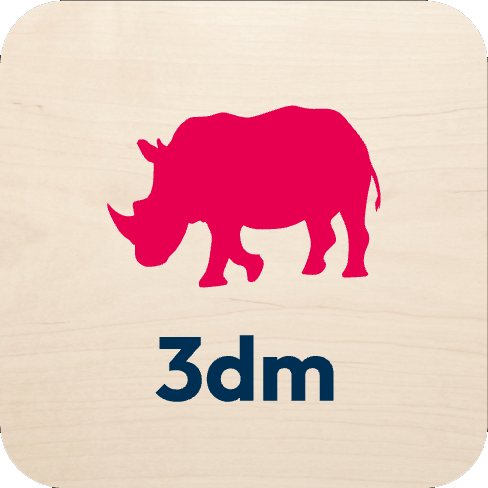
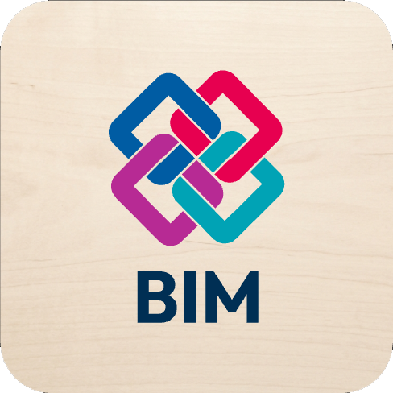
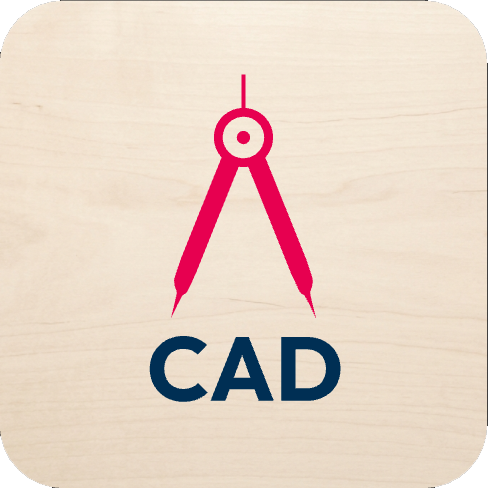
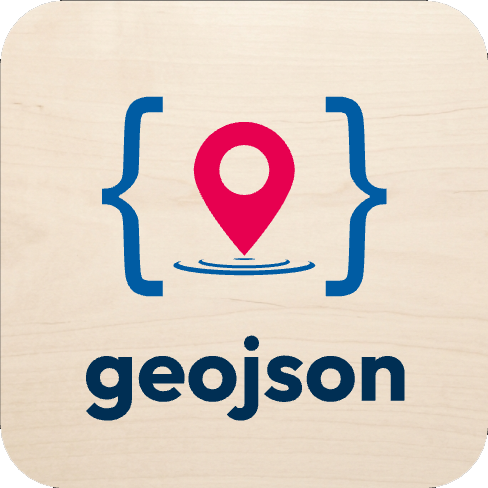

Aio Suite · Visores
Cajón de aplicaciones
Visores para archivos locales · Modo Drag & Drop

Aio 3DM

Aio IFC

Aio DXF

Aio Mapas
Aio Media
ⓘ El modo drag & drop no cuenta con soporte para compartir archivos, los datos se guardan en la memoria local del navegador.
Selecciona una app para continuar.